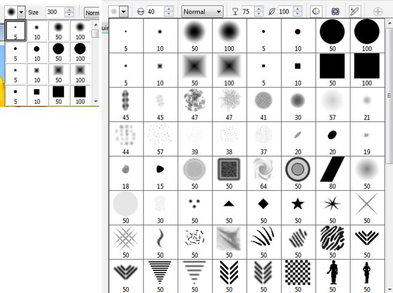

Обзор улучшений в Corel Photo-Paint X7
В этом уроке я попытаюсь сделать обзор новых усовершенствований, которые коснулись тех инструментов, которые уже были в Corel Photo-Paint ранее. Можно было бы конечно этот момент отнести к новинкам, но я решил отделить эти усовершенствования от действительно новых инструментов, которые появились только в Corel Photo-Paint X7.
1. Начну я пожалуй с инструментов рисования и иже с ними. Понятно, что чаще всего приходится использовать инструмент Brush (Кисть). Как я упоминал в предыдущем уроке, здесь изменилась Панель свойств (рис. 1).
Как уже говорилось в предыдущем уроке, здесь исчезли раскрывающиеся списки Brush type (Тип кисти) и Brush category (Категория кисти), а вместо них появился элемент управления Brush (Кисть) (рис. 2).
Здесь вы можете непосредственно выбрать тип и категорию кисти. Что не может не радовать, так это большая область предварительного просмотра выбранного типа кисти. Так же хорошим новшеством является то, что в этом списке сохраняются последние использованные кисти, которые отображаются в области Recent Brushes (Недавние кисти). Конкретно в моем случае, Photo-Paint X7 иногда ведет себя довольно странно. При выборе в списке категорий кисти Airbrush (Аэрографа), кисть не изменялась, т. е. не происходило вообще ничего. Оставалась кисть по умолчанию. И лишь выбрав сначала Pencil (Карандаш), дело сдвинулось с мертвой точки и стало возможным выбрать другую категорию кисти, в данном случае Airbrush (Аэрограф). Не скажу, что это было чем-то катастрофичным, но все же неприятной мелочью.
Как я говорил в предыдущем уроке, аналогичное изменение Панели свойств коснулось и инструментов Effect (Эффект) и Clone (Клонирование).
Еще одно приятное усовершенствование коснулось элемента управления Nib shape (Форма кончика) (рис. 3).

На рис. 3 слева, показан старый вариант раскрывающегося списка Nib shape (Форма кончика), а справа – новый. Думаю комментарии излишни.
2. Следующее улучшение, которое коснулось множества инструментов, например, Прямоугольник, Эллипс, Заливка и т. д. Это улучшение, а заодно и нововведение – это окно Edit Fill (Изменить заливку) (рис. 4).
Это окно стало унифицированным, в том смысле, что при редактировании заливки (из Панели свойств любого инструмента и Области управления цветом), теперь появляется именно это окно, а не разные, как это было в предыдущих версиях. Тип заливки выбирается соответствующими кнопками в верхней правой части окна. В случае Однородной заливки, у пользователей хоть немного знакомых с Photo-Paint, новый вид окна не вызовет проблем с освоением. А вот настройка градиентной заливки (рис. 5) претерпела заметные изменения.
Многие элементы управления (и это естественно) остались прежними, изменившись визуально или поменяв расположение в окне, что стало намного удобней. Например, если ранее тип заливки выбирался в раскрывающемся списке Type (Тип), то теперь этот список заменен на ряд соответствующих кнопок в области Type (Тип).
Количество шагов заливки теперь находится в области Flow (Обтекание), а не в области Options (Параметры), как это было раньше. Тут же появился новый элемент управления Acceleration (Ускорение) – усовершенствованная версия счетчика Edge pad (Сдвиг края).
Появились дополнительные возможности управления градиентной заливкой. На рис. 6 показан один из таких новых элементов управления – Reverse fill (Повернуть заливку), позволяющий быстро зеркально отразить заливку, что раньше было возможно сделать только с помощью счетчика Angle (Угол).
И хотя сам счетчик никуда не делся, а переместился в новую область Transformations (Преобразования), но быстрое зеркальное отображение заливки лишним тоже не будет.
А вот набор элементов управления в области Transformations (Преобразования), приятное усовершенствование в управлении градиентной заливкой. Хотя некоторые из этих элементов управления были и раньше, но кое-что добавилось… Два счетчика Fill width (Ширина заливки) и Fill height (Высота заливки) (рис. 7).
Хотя в случае линейной заливки, счетчик Fill height (Высота заливки) никак не сказывается на конечном результате, то при применении радиальной заливки, результат может оказаться куда более полезным в работе (рис. 8).
Настройки выставленные в счетчиках показаны на рис. 7. Хотя из рис. 8 может показаться, что заливка пропорциональна размерам объекта, на самом деле это не так. Залитый объект имел вытянутую прямоугольную форму, я его обрезал, чтобы скриншот был меньшего размера. Я имею ввиду, что глядя на скриншот и значение в счетчике Fill width (Ширина заливки), можно подумать, что имеет место явное несоответствие, т. к. ширина заливки на скриншоте явно не 20% от размера объекта.
Также является новинкой элемент управления Skew (Наклон). В некоторых случаях, штука тоже полезная, т. к. иногда необходимо создать «скошенную» заливку.
Назначение элемента управления Lock aspect ratio (Заблокировать пропорции), в виде замочка, думаю всем понятно.
В новой версии также усовершенствована возможность создания пользовательских заливок. Здесь разработчики потрудились на славу, добавив очень полезное новшество – возможность задавать прозрачность узлов градиентной заливки, что было ранее возможно только при применении Интерактивной заливки и то, работала она (прозрачность) не совсем корректно.
Подверглась усовершенствованию и возможность задавать цвет узла заливки – появился новый элемент управления Node color (Цвет узла) (рис. 9).
И хотя в предыдущих версиях было удобней выбирать цвет из имевшейся в диалоговом окне палитры, но наличие в новом элементе управления Пипетки, с лихвой компенсирует отсутствие этой палитры.
После создания и настройки заливки, ее можно сохранить, нажав на кнопку Save as new (Сохранить как новую) (рис. 10).
После нажатия этой кнопки, появляется окно (рис. 11), с помощью которого можно сохранить заливку.
В этом окне, в раскрывающемся списке Language (Язык), можно выбрать язык (хотя я не понял зачем это надо) и присвоить название заливки в поле Name (Имя), а также задать теги. После нажатия кнопки ОК и закрытия окна, название заливки появится в окне Edit Fill (Изменить заливку) (рис. 12).
В этой же части окна (рис. 12), можно выбрать образец заливки. Эта возможность также претерпела изменения (рис. 13). Список встроенных образцов как-то оскуднел, зато выбор образцов из списка стал более наглядным.
В этом окне налицо теперешние тенденции для работы в Интернете. Хотя я практически никогда не прибегал к онлайн ресурсам находясь в среде Corel, однако думаю, поклонникам работы во всемирной паутине это новшество придется по вкусу. Здесь следует отметить, что открытие этого списка образцов заливки происходит с какой-то жуткой задержкой. Не знаю с чем это связано, возможно с отсутствием подключения к интернету.
Для выбора необходимого образца заливки, достаточно щелкнуть на нем мышью. Тут же появится маленькое всплывающее диалоговое окно (рис. 14).
В этом маленьком окошке следует щелкнуть кнопку Select (Выбрать), которая обведена на рисунке красным кружком.
Также в этом маленьком безымянном окошке есть возможность добавить заливку в Избранное или сделать ее общедоступной. Последняя кнопка, More options (Больше настроек) (рис. 15), дает доступ к выпадающей панели с двумя инструментами.
Здесь можно выбрать редактирование данных заливки, как на рис. 11, либо удалить ее.
И последнее усовершенствование в области редактирования градиентной заливки – более удобный элемент управления задания цветов, в виде цветной полоски с указателями цвета (рис. 16).
Также приятное усовершенствование коснулось управления заливкой растровым узором (рис. 17).
Здесь собственно нечего особо объяснять, т. к. назначение элементов управления понятно даже по их названиям, а их применение легко освоить даже начинающему пользователю.
3. Третье улучшение затронуло команду и диалоговое окно Straighten Image (Выпрямить изображение). В этом окне появился новый элемент управления – ползунок Correct lens distortion (Коррекция дисторсии объектива) (рис. 18).
Честно говоря, я пока не смог придумать, где эту возможность можно применить. Учитывая, что наиболее частый случай, где можно применить команду Straighten Image (Выпрямить изображение), это выравнивание изображения после сканирования и не так часто возникают случаи, когда в изображении возникают выпуклости или вогнутости, которые можно исправить этим новым инструментом. И тогда применение этого средства целесообразно.
В следующем уроке мы поговорим о новых инструментах в Corel Photo-Paint X7.